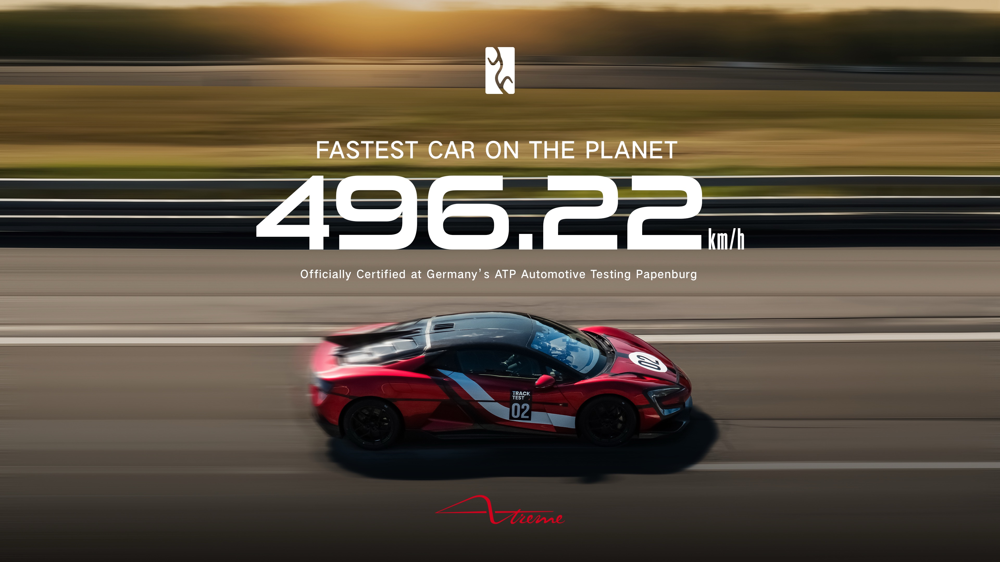

SuperCars News
El Yangwang U9 Xtreme bate récord mundial
El 14 de setembre de 2025, el model "Yangwang U9 Xtreme" de BYD va assolir una velocitat punta de "496,22 km/h", convertint-se en el cotxe de producció més ràpid del món. Aquest vehicle és una versió millorada extremadament del versió antic Yangwang U9, que ja era un dels cotxes elèctrics més ràpids del mercat.

Altres dades destacades
- Arquitectura elèctrica de "1.200 V" (versus els 800 V de la versió estàndard)
- Quatre motors d’alta velocitat amb rendiment combinat de gairebé 3.000 CV
- Bateria del tipus Blade (fosfat de ferro-liti) amb taxa de descàrrega elevada (30 C)
- Neumàtics semi-slicks i suspensió activa DiSus-X adaptada per al circuit
Enllaços d’interès
- Comunicado oficial BYD
- Top Gear: “Ten things you need to know”
- Car & Driver: récord del U9 Xtreme
Temes tècnics
- Potència
Més de 3.000 CV (2.200 kW).
- Sistema elèctric
Arquitectura de 1.200 V que permet transmetre més potència amb menor pèrdua.
- Propulsió
Quatre motors elèctrics d’ultra alta velocitat.
- Bateria
Bateria Blade de fosfat de ferro i liti amb taxa de descàrrega de 30C (capacitat per descarregar-se ràpidament).
- Suspensió
Sistema intel·ligent DiSus-X que permet moviments com salts i girs, i ajust dinàmic per a condicions de circuit.
- Velocitat màxima
496,22 km/h.
- Materials
Carrosseria fabricada en carboni forjat i fibra de carboni.
- Producció
Només es produiran 30 unitats d’aquesta versió exclusiva.